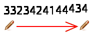
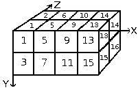
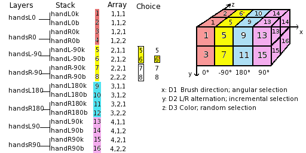
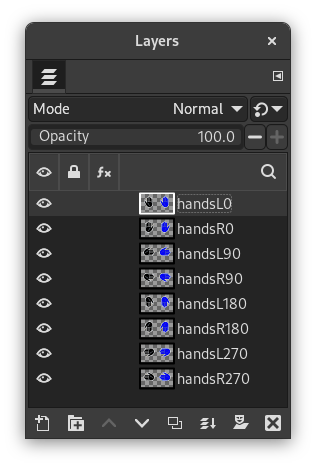

Just like for normal brushes, these animated brushes can also be either grayscale or color. For grayscale images, where the actual brush will use the current foreground color, you use white for transparency. For color images, transparent parts are used as such and when making brush strokes, the actual colors will be used instead of the foreground color.
To create a new animated brush, create either a grayscale or color image, based on whether you want the brush to use the user's foreground color, or the actual colors in the image. Then create the images for your animation steps. To save the brush into gih format, select → , name your work with the gih extension, and press the button. The following window is displayed:

This dialog box has several options that allow you to select how your brush is animated.
- Spacing (Percent)
-
“Spacing” is the distance between consecutive brush marks when you trace out a brushstroke with the pointer. You must consider drawing with a brush, whatever the paint tool, like stamping. If Spacing is low, stamps will be very close and stroke look continuous. If spacing is high, stamps will be separated: that's interesting with a color brush (like “green pepper” for instance). Value varies from 1 to 200 and this percentage refers to brush “diameter”: 100% is one diameter.
- Description
-
It's the brush name that will appear at the top of Brush Dialog (grid mode) when the brush is selected.
- Cell Size
-
That is size of cells you will cut up in layers. Default is one cell per layer and size is that of the layer. Then there is only one brush aspect per layer.
We could have only one big layer and cut up in it the cells that will be used for the different aspects of the animated brush.
For instance, we want a 100×100 pixels brush with 8 different aspects. We can take these 8 aspects from a 400×200 pixels layer, or from a 300×300 pixels layer but with one cell unused.
- Number of cells
-
That's the number of cells (one cell per aspect) that will be cut in every layer. Default is the number of layers as there is only one layer per aspect.
- Display as
-
This tells how cells have been arranged in layers. If, for example, you have placed height cells at the rate of two cells per layer on four layers, GIMP will display:
1 rows of 2 columns on each layer. - Dimension, Ranks, Selection dropdown
-
There things are getting complicated! Explanations are necessary to understand how to arrange cell and layers.
GIMP starts retrieving cells from each layer and stacks them into a FIFO stack (First In First Out: the first in is at the top of the stack and so can be first out). In our example 4 layers with 2 cells in each, we'll have, from top to bottom: first cell of first layer, second cell of first layer, first cell of second layer, second cell of second layer, …, second cell of fourth layer. With one cell per layer or with several cells per layer, result is the same. You can see this stack in the Layers Dialog of the resulting
.gihimage file.Then GIMP creates a computer array from this stack with the Dimensions you have set. You can use four dimensions.
In computer science an array has a “myarray(x,y,z)” form for a 3 dimensions array (3D). It's easy to imagine a 2D array: on a paper it's an array with rows and columns

With a 3d array we don't talk rows and columns but Dimensions and Ranks. The first dimension is along x axis, the second dimension along y axis, the third along z axis. Each dimension has ranks of cells.

To fill up this array, GIMP starts retrieving cells from the top of stack. The way it fills the array reminds that of an odometer: right rank digits turn first and, when they reach their maximum, left rank digits start running. If you have some memories of Basic programming you will have, with an array(4,2,2), the following succession: (1,1,1),(1,1,2),(1,2,1),(1,2,2),(2,1,1),(2,1,2),(2,2,2),(3,1,1),…, (4,2,2). We will see this later in an example.
Besides the rank number that you can give to each dimension, you can also give them a Selection mode. You have several modes that will be applied when drawing:
- Incremental
-
GIMP selects a rank from the concerned dimension according to the order ranks have in that dimension.
- Angular
-
GIMP selects a rank in the concerned dimension according to the moving angle of the brush.
The first rank is for the direction 0°, upwards. The other ranks are affected, clockwise, to an angle whose value is 360/number of ranks. So, with 4 ranks in the concerned dimension, the angle will move 90° clockwise for each direction change: second rank will be affected to 90° (rightwards), third rank to 180° (downwards) and fourth rank to 270° (-90°) (leftwards).
- Random
-
GIMP selects a rank at random from the concerned dimension.
- Velocity, Pressure, X tilt, Y tilt
-
These options are for sophisticated drawing tablets.
Examples
- A one dimension image pipe
-
Well! What is all this useful for? We'll see that gradually with examples. You can actually place in each dimension cases that will give your brush a particular action.
Let us start with a 1D brush which will allow us to study selection modes action. We can imagine it like this:

Follow these steps:
-
Select → from the main menu.
Set Width and Height for example to 30 pixels.
In the Advanced Options, set the Color space to RGB color and set Fill with to Transparency.
Using the Text tool create 4 layers “1”, “2”, “3”, “4”. Delete the “background” layer.
-
Select → from the main menu to first save your image as an
.xcffile to keep its properties.Select → from the main menu to export the image as an animated brush with the
.gihextension.Export the image with a
.gbrextension in thebrushesdirectory located inside your personal GIMP configuration folder. -
In the Export Image as Brush Pipe dialog, provide a Description, set the Spacing (percent) to 100, set the Cell size to 30×30, set Dimension to 1, and set Ranks to 4, and the Selection drop-down to incremental. Then click the button.
-
In the Brush Dialog, click on the button
 .
.
Your brush appears among the other brushes. You can use it immediately, without restarting GIMP.
Select your brush. Select pencil tool for instance and click and hold with it on a new image:

You see 1, 2, 3, 4 digits following one another in order.
-
Take your
.xcfimage file back and export it as.gihsetting the Selection drop-down to random:
Digits will be displayed at random order.
-
Now set the Selection drop-down to angular:

-
- A 3 dimensions image hose
-
We are now going to create a 3D animated brush: its orientation will vary according to brush direction, it will alternate Left/Right hands regularly and its color will vary at random between black and blue.
The first question we have to answer to is the number of images that is necessary. We reserve the first dimension (x) to the brush direction (4 directions). The second dimension (y) is for Left/Right alternation and the third dimension (z) for color variation. Such a brush is represented in a 3D array “myarray(4,2,2)”:

There are 4 ranks in first dimension (x), 2 ranks in second dimension (y) and 2 ranks in third dimension (z). Thus there are 4×2×2 = 16 cells. We need 16 images.
-
Creating images of dimension 1 (x)
Open a new 30×30 pixels image, RGB with Transparent Fill Type. Using the zoom draw a left hand with fingers upwards.[2] Save it as
handL0k.xcf(hand Left 0° Black).Open the Layers Dialog. Double click on the layer to open the Layer Attributes Dialog and rename it to handL0k.
Duplicate the layer. Let visible only the duplicated layer, select it and apply → → . Rename it to handL90k.
Repeat the same operations to create handL180k and handL-90k (or handL270k).
-
Creating images of dimension 2 (y)
This dimension in our example has two ranks, one for left hand and the other for right hand. The left hand rank exists yet. We shall build right hand images by flipping it horizontally.
Duplicate the handL0k layer. Let it visible only and select it. Rename it to handR0K. Apply → → .
Repeat the same operation on the other left hand layers to create their right hand equivalent.
Re-order layers to have a clockwise rotation from top to bottom, alternating Left and Right: handL0k, handR0k, handL90k, handR90k, …, handR-90k.
-
Creating images of dimension 3 (z)
Creating images of dimension 3 (z): The third dimension has two ranks, one for black color and the other for blue color. The first rank, black, exists yet. We well see that images of dimension 3 will be a copy, in blue, of the images of dimension 2. So we will have our 16 images. But a row of 16 layers is not easy to manage: we will use layers with two images.
Select the handL0k layer and let it visible only. Use → to change the canvas size to 60×30 pixels.
Duplicate handL0k layer. On the copy, fill the hand with blue using Bucket Fill tool.
Now, select the Move tool. Double click on it to accede to its properties: check Move the Current Layer option. Move the blue hand into the right part of the layer precisely with the help of .
Make sure only handL0k and its blue copy are visible. Right click on the Layers dialog: Apply the command with the option Expand as Necessary. You get a 60×30 pixels layer with the black hand on the left and the blue hand on the right. Rename it to “handsL0”.
Repeat the same operations on the other layers.
-
Set layers in order
Layers must be set in order so that GIMP can find the required image at some point of using the brush. Our layers are yet in order but we must understand more generally how to have them in order. There are two ways to imagine this setting in order. The first method is mathematical: GIMP divides the 16 layers first by 4; that gives 4 groups of 4 layers for the first dimension. Each group represents a direction of the brush. Then, it divides each group by 2; that gives 8 groups of 2 layers for the second dimension: each group represents a L/R alternation. Then another division by 2 for the third dimension to represent a color at random between black and blue.
The other method is visual, by using the array representation. Correlation between two methods is represented in next image:

How will GIMP read this array?: GIMP starts with the first dimension which is programmed for “angular”, for instance 90°. In this 90° rank, in yellow, in the second dimension, it selects a L/R alternation, in an “incremental” way. Then, in the third dimension, in a random way, it chooses a color. Finally, our layers must be in the following order:

-
Voilà. Your brush is ready. Save it as
.xcffirst, then export as.gihwith the following parameters:-
Spacing: 100
-
Description: Hands
-
Cell Size: 30×30
-
Number of cells: 16
-
Dimensions: 3
-
Dimension 1: 4 ranks Selection: Angular
-
Dimension 2: 2 ranks Selection: Incremental
-
Dimension 3: 2 ranks Selection: Random
-
Place your
.gihfile into the GIMP brush directory and refresh the brush box (see steps above). You can now use your brush.Figure 7.19. Here is the result by stroking an elliptical selection with the brush:

This brush alternates right hand and left hand regularly, black and blue color at random, direction according to four brush directions.
-
-
[2] Ok, we are cheating here: our hand is borrowed from https://commons.wikimedia.org/wiki/File:Stop_hand.png.